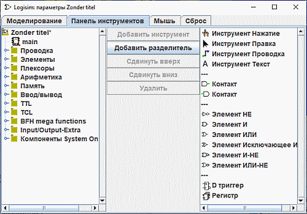

Вкладка «Панель инструментов»
Вкладка «Панель инструментов» позволяет настраивать состав и порядок инструментов, отображаемых на панели инструментов.

С левой стороны расположена панель «Навигатор» со списком всех доступных инструментов, а список в правой части отображает текущее содержимое панели инструментов (три дефиса «---» обозначают разделитель, который отрисовывается на панели в виде вертикальной серой линии). Между навигатором и списком находятся пять управляющих кнопок:
-
Добавить инструмент — добавляет выбранный в навигаторе инструмент в конец списка панели инструментов.
-
Добавить разделитель — вставляет разделитель в конец списка панели инструментов.
-
Сдвинуть вверх — перемещает выбранный элемент панели инструментов на одну позицию вверх (влево).
-
Сдвинуть вниз — перемещает выбранный элемент панели инструментов на одну позицию вниз (вправо).
-
Удалить — убирает выбранный элемент с панели инструментов.
Атрибуты, связанные с инструментами панели, не настраиваются в этом окне; вы можете просматривать и редактировать их непосредственно на холсте главного окна программы при выборе соответствующего инструмента.
Далее: Вкладка «Мышь».